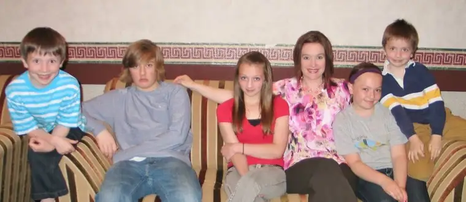

 |
| Mother’s Day 2011 – Peace Garden Writer and seedlings |
{kind=link}
I’m borrowing a photo I posted a few days ago on Peace Garden Mama to make my point, which you won’t see in full until the end of this post. For now, keep those five children in mind as I continue on.
This short series on “Reasons Blogging isn’t a Waste of Time” started last week, after a writing friend who doesn’t blog challenged me regarding my blogging activity. My purpose isn’t to defend myself so much as to share what I have found to be true of blogging versus what some might perceive.
Writers who haven’t dipped their toes into the blogging world for one reason or another (and some do have good reason not to) assume that starting a blog will be a major inconvenience, and furthermore, could ruin a writer’s chances of garnering paid work – the kind that really counts.
Please don’t get me wrong. I enjoy being paid for my communications work as much as the next professional. I wouldn’t do it all for free, not after the training I’ve received and the commitment I’ve given to my profession. I value that part of what I do and how it helps my family make ends meet. But the act of blogging is not much different, really, than keeping a diary or journal. Sure, there might be a bit more of a time commitment, but for the efficient writer, it’s really not that taxing. So from a time perspective alone, the argument is on the weak side. Reading and being an active respondent on others’ blogs is another matter, of course, but let’s just consider the keeping of a blog for now.
In practice, instead of hindering my other, more professional writing pursuits, I’ve found that blogging keeps the machine well-oiled. Through blogging and staying in the channel of the online writing world, I’m motivated to do even more. My output is actually greater than if I were to pull back and only accept paid pieces. Blogging offers a type of creative reprieve that helps me gather up steam for the next round, if you will.
Another way to think of it is like stretching your muscles before a race. Blogging is the stretching, whereas paid writing is the actual race. The former gives energy to, adds fuel to, gives rise to the latter. It’s the arpeggio a piano player will take up before the recital piece to get her fingers limbered up.
But what about multiple blogs? Isn’t that a bit much? Currently, I have three blogs. Peace Garden Writer is an extension of what I’d begun on Wednesdays on my first blog, Peace Garden Mama. Starting PGW didn’t require anymore time than what I was already doing; I just switched spaces for it. Granted, my newest blog, An Atheist and a Catholic, which I co-founded with a friend, requires a slight bit more time and effort, but since I was already engaged in a regular back-and-forth with the other founder through email several times a week, again, not much more time, if any, has been expended through starting that particular blog. In fact, I see that blog as a streamlining of our previous efforts to some degree, which helps us make even better use of our time, and carries the added benefit of bringing even more voices into the discussion.
Time is important to me, and I’m not going to undertake pursuits that don’t make good use of my time. But contrary to what it might seem on the outside, blogging is much less taxing and more valuable than what some believe.
Now getting back the point I set out to make at the beginning (remember the photo?), as far as multiple blogs go, it’s kind of like having kids. When you have your first child, you find that thought that you’ll ever be able to love a second child more than the first rather impossible. Finding enough love in your heart for a third, well, utterly unthinkable. But somehow, your heart expands with each child, and you are able to open your life to more. Though it’s not a perfect parallel, I see blogging similarly. Just when I thought I could never accept another, a new one emerged and it’s become life-giving rather than -taking.
Nevertheless, there’s a season for everything, and I might find at some point that blogging is too much of a diversion. For now, it works for me and I’m grateful for it.
Q4U: When did you make room for something that seemed previously limiting?